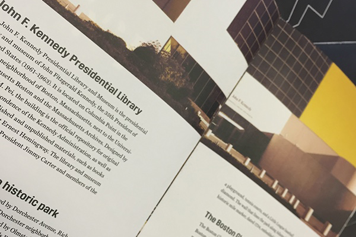
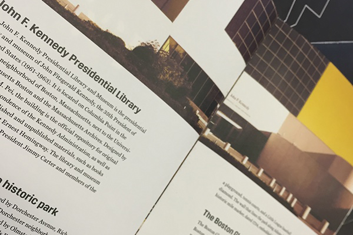
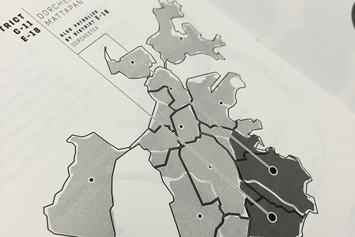
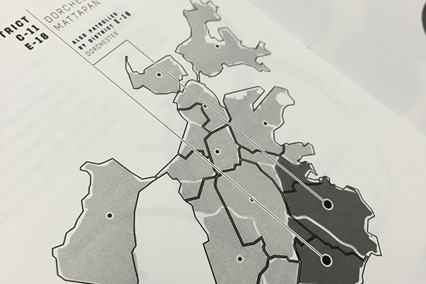
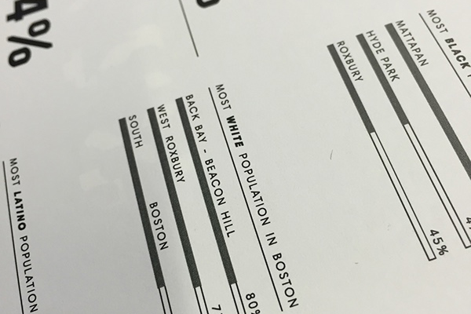
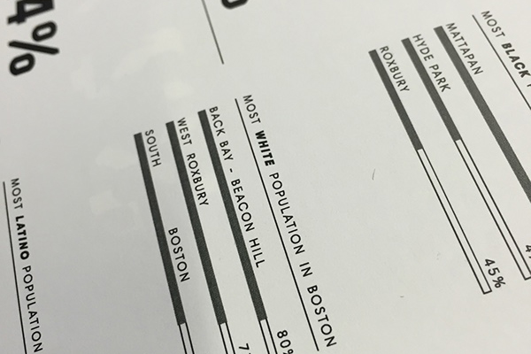

 

 

Boston Neighborhoods
As a way to repurpose the census data and inform the public on the state of their neighborhood, we created this set of booklets as a proposed quarterly print to be distributed to citizens, local government, and community centers. The idea is that education will increase quality of life. This Project is Brother to the Citizen Connect Redesign